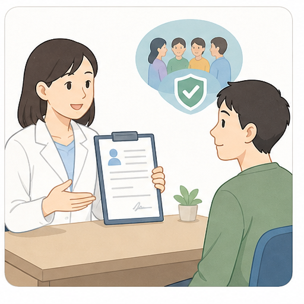

この調査について
この画面はダミーです。回答は保存されません。クロザピンを外来で始める方法について、どの条件なら前向きに考えられるかを伺います。
クロザピンについて
クロザピンは、複数の抗精神病薬で十分に良くならない統合失調症に使われる薬です。症状や生活のしづらさが改善する可能性があります。
一方で、血液検査や体調確認が必要です。発熱、胸痛、息切れ、強い便秘などがあれば早めに相談し、必要に応じて入院に切り替えます。
対象確認
現在の治療への感じ方
現在の治療について、いちばん近いものを選んでください。

入院して始める場合
今の状態で主治医から「クロザピンを始めるなら、まず2〜4週間程度入院して体調確認をしながら始める」と提案された場合、どう感じますか？
今より症状や生活のしづらさが強くなった場合はどうですか？

外来で始める場合
同じ効果と安全確認の考え方で、入院せず外来通院で始められる場合、どう感じますか？ 7週目以降も定期通院と採血は続きます。
今より症状や生活のしづらさが強くなった場合はどうですか？

外来導入の条件
外来で始める場合、どの条件なら前向きに考えられるかを順番に確認します。
一番大きい負担
外来導入で一番大きい負担になりそうなものを1つ選んでください。

安全性検証研究について
条件が合えば、来年度の外来導入安全性検証研究について説明を聞きたいですか？
外来導入の受容閾値: 未回答